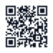

Often the only sign is feeling far drunker than you should for what you have had. Dizziness or confusion can also be signs.
Who can help

Report it anonymously.
No names, no sign-up.
drinksafe.app
Drink Safe is an informational platform only. Information provided may not be verified or accurate. This does not replace reporting to authorities. If you have experienced a crime, please contact the police directly.